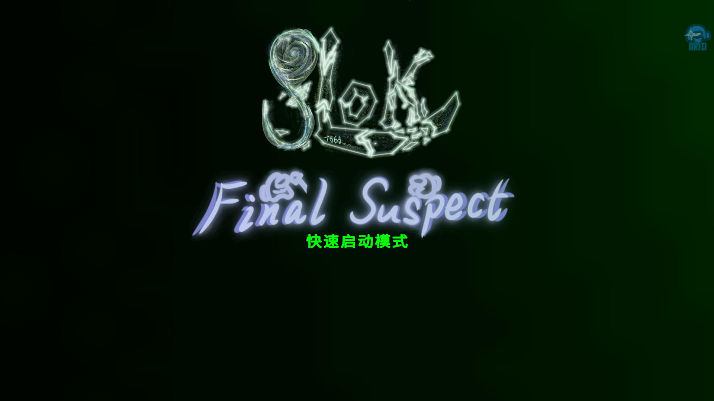
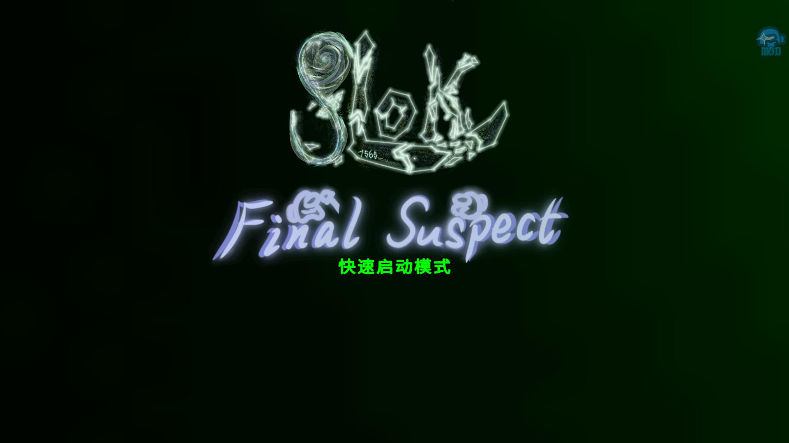

快速启动模式
在Final Suspect模组中，我们引入了快速启动模式以优化游戏加载流程。启用该模式后，系统将跳过非必要环节。
经实测，常规启动耗时约15秒，而启用快速启动后仅需5秒即可直达主菜单。该模式特别适合频繁重启游戏的测试场景，玩家可通过设置菜单切换模式。
首次安装或大版本更新时仍需完整加载资源。
快速启动模式示意图：
在Final Suspect模组中，我们引入了快速启动模式以优化游戏加载流程。启用该模式后，系统将跳过非必要环节。
经实测，常规启动耗时约15秒，而启用快速启动后仅需5秒即可直达主菜单。该模式特别适合频繁重启游戏的测试场景，玩家可通过设置菜单切换模式。
首次安装或大版本更新时仍需完整加载资源。
快速启动模式示意图：
